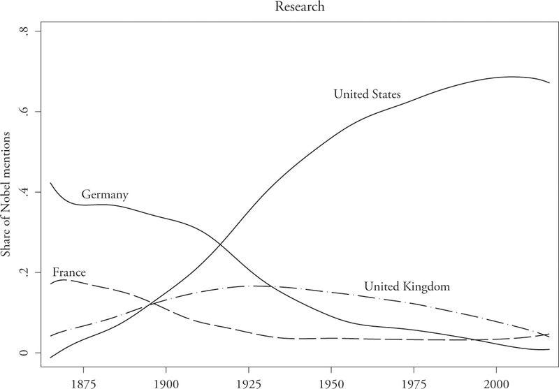
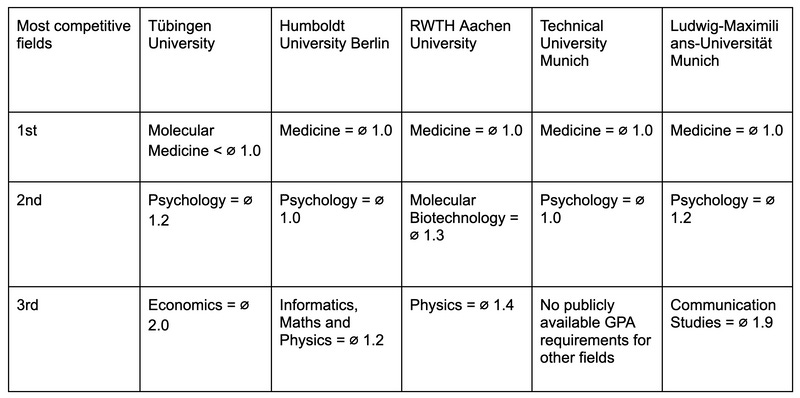
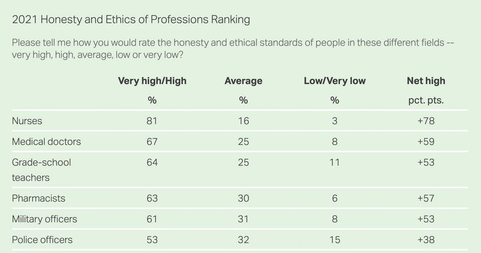

TL;DR
German academia doesn’t have world-class universities and is self-avowedly egalitarian.
Without a clear top university, many talented students instead enter highly competitive medical schools to prove their ability.
But, as argued here, medical school is a bad default choice for these students if you care about accelerated scientific, material, and moral progress. This is for four reasons:
Entering many different universities instead of one top college, talented students do not generate and thus do not profit from local agglomeration effects.
Medical students aren’t allowed the intellectual flexibility to explore ideas and projects independently.
Medical school takes six years, offering no intermediate degree. This locks in students’ choice of study, even if they change their minds.
Lastly, practicing medicine offers small impact at the margin (i.e., talented medical students can’t add much to an already highly advanced medical system).
Instead, talented individuals could study subjects and enter jobs that allow them to do much more good.
Changing this status quo is difficult, as i) strong competition between universities is probably disliked by university administrations and ii) reforming existing universities is famously hard through entrenched bureaucratic decision-making and ensuing vetocracy. Thus, change might only be possible through affluent outsiders who launch a new, better university.
Epistemics
I’m uncertain how big the problem of bad talent allocation in Germany really is. However, given that it reduces the likelihood of careers with an outsized positive impact, the negative impact could be large.
I would change my mind on the importance of this problem if i) elite colleges only add credentials without increasing students’ human capital, or if ii) research breakthroughs, new companies, or social movements aren’t made more likely by improved talent allocation.
Introduction
German undergraduate education is largely not considered world-class. Defining and ranking a “world-class university” is fuzzy and unsatisfying, but many still know which universities have the most prestige. For the sake of being more concrete, let’s defer to Matt Yglesias to pick a criterion. He notes:
“Boris Johnson’s government recently rolled out an initiative to let recent graduates of the world’s top universities move to the UK. That required them to come up with a definition of the world’s top universities. Of the 38 on the list, a staggering 20 are American. And while it’s true most of those are private […], there are six US public universities on the list versus five European universities. There are five California universities on the list (Stanford, Caltech, and three UCs) versus one from Germany [LMU Munich]. “
Hence, every year American high school students jostle for a rare spot at one of the country’s Ivy League universities. While students will also take other factors into account, they will want to go to a university that provides a credible signal of their ability. This might be even more true for ambitious or talented students, as the mere signaling value of being admitted to an elite university is often enough to guarantee a stellar career. This explains why Oxford graduates with a language degree can join DeepMind right after university.
In contrast, the absence of a clear top university leaves German high-school students with no obvious university to go to. (We can test this by asking German and US-American students where they want to go to college after high school. Predicting the answer in Germany will be tricky.) This is partly by design, stemming from a stronger egalitarian streak in German academia.
A troubling century
Where does this stronger desire for egalitarianism come from? Looking one century into the past, German universities were renowned throughout the West. Various American universities that are by now world-leading explicitly took the “Humboldtian” model of higher education as a gold standard worth emulating. As detailed by William Kirby’s recent book “Empires of Ideas”, German universities lost much of their standing through the upheaval and destruction of World War II. A figure in Miguel Urquiola’s ‘Markets, Minds, and Money’ plots this decline, showing which universities Nobel prize winners attended before receiving their Nobel awards.

Subsequent reforms made many universities increasingly ungovernable through exaggerated democratization of university decision-making. Finally, the horrors of Nazi ideology made explicit talk of nurturing an elite unpalatable.
The cultural effect of this past manifested in a recent conversation with a German professor: When I pointed out the potential value of building a German Ivy-league type university, he was concerned mainly by how this would make all other German universities look second class.
What do German undergraduates study?
Faced with a university landscape with no clear hierarchy, students disperse among many universities that do not differ much in their prestige.
Students still want to distinguish themselves through their ambition and intellect. Thus, instead of competing to get into a high-status university, many instead vie for the most prestigious course of study, which in Germany is still, by and large, medicine.
The source of this prestige is legible: spots for studying desired fields in popular universities are often mostly allocated by GPA; medicine is the only field requiring perfect GPAs (1.0; equalling all A or A* GPAs). Hence, not wanting to waste their perfect GPAs, many students enter medical school at various universities. Below are some above-average universities and their required GPAs for competitive fields. As we see, medicine is the only field that requires all A*:

You might wonder why students’ love for medical school should be questioned, given the respect owed to medical doctors. While not disregarding medical doctors’ self-sacrifice, there are two important reasons why medical school shouldn’t be talented students’ default choice. First, students (and their society) would gain more by studying flexible subjects, at one location, with other like-minded students. Second, the actual impact of additional medical doctors in Germany is fairly small. Let’s take a look at these considerations in turn.
Empowering students can have great value
The obvious choice for talented students in the UK and the US are universities like Oxbridge or Ivy League colleges. Though these universities have their own issues, they serve as an alternative that highlights the downsides of German undergraduate education.
To begin with, instead of going to medical school, some A* students could live up to their strengths more flexibly by entering US-style undergraduate programs. Equipped with a broader set of skills and the signal of an Ivy-league, graduates can enter a wide variety of companies, work their way into prestigious publications, or push the technological frontier at start-ups or well-funded research institutes.
Furthermore, lacking a national Schelling point for talented students leads to weaker agglomeration effects. Though economists typically use such effects to explain the productivity of London or Silicon Valley, bunching bright students together can have similar outsized returns. Innovations achieved by outfits like MIT’s Building 20 (home of the first LIGO experiments) and Bell Labs (development of the transistor, the photovoltaic cell, and information theory) illustrate the value of small but strong intellectual hubs.
Though undergraduate students at Ivy League-type universities only spend 3-4 years together, their interactions likely last long after graduation: Investigating hyperlocal agglomeration effects, Matt Clancy of New Things Under the Sun shows that once innovators find each other, they will continue to work and collaborate with one another even after geographic separation.
Instead, without a clear intellectual hub to move to, many talented German students choose to enter medical studies at whatever university instead of all entering the same institution. This limits students’ opportunity to build numerous, long-lasting relationships with similarly gifted students.
More doctors, little value
But so what? After all, many Western economies complain of acute shortages of medical personnel (though in many cases, this shortage is largely self-inflicted). Practicing medicine is also still widely respected, ranking as the 2nd most trusted profession (right after nursing) in a 2021 Gallup poll:

Even so; although medical doctors do good (adding approximately 4 DALYs for every year of work), there are many other ways to do vastly more good than working as a doctor (for instance, by donating $3,500 to the Against Malaria Foundation, thus saving around one entire life).
In economic terms adding physicians to a highly advanced medical system offers comparably small impact at the margin. The reasons for this are manifold. As noted in this far more extensive article by Gregory Lewis, Western medical systems are already filled with well-trained specialists who are aiming to rid us of remaining non-communicable diseases. All the while, (most) low-hanging fruit that extend life span have already been plucked by curbing endemic infectious disease, fighting air pollution, and a broad decline of violence.
One could now try to salvage medical careers by pointing to the value of biomedical research. But again, this area of research is i) also far from neglected and ii) more impactful when pursued in the US. For instance, Boudrea et al. analyzed publications in four major medical journals between 2000 and 2009, noting that
“Harvard researchers account for around 5 percent of scientific articles published in the top four medical journals, a larger share than Germany or Canada as a whole.”
Any bright-eyed student fascinated by the life sciences should thus first try to get into a British or American university (and, if possible, apply for a scholarship by the DAAD, and the German or Swiss Scholarship Foundation!)
Conclusion
Smart high school graduates need better options than the current choice between homogeneous and middling universities, making too many of them opt for medical school. Importantly, the argument does not call for fewer students at medical schools but a lower share of particularly talented students. Generally, good physician performance likely requires above-average, but not outlier cognitive performance while also resting on factors such as social intelligence, conscientiousness, and stamina. Based on this, there are likely enough individuals fitting these criteria who would be happy to replace students currently attending medical school.
To get towards such a world, we could either lower the allure of medical school or offer a different high-status option that provides greater societal value.
To achieve the former, medical school admission officers could decrease their focus on GPAs, instead only requiring an entry test. Though testing would still be competitive, fewer students would think they would “waste” their A* grades if not attending medical school.
To achieve the latter, one would want to change German higher education fundamentally by creating one or two clear champions among universities. Such change would likely need to come from outside current universities, as the status quo suits many senior German academics. I’ll dive into the merits of launching such a university in a future blog post.
Thanks for reading! If you have any feedback or other thoughts, shoot me an email or dm me on Twitter.